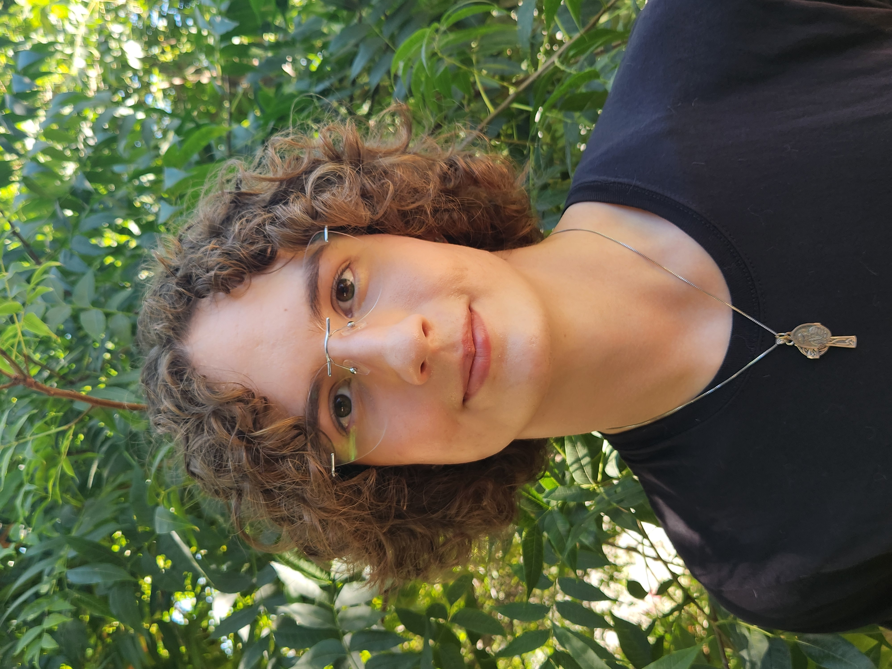

Teddy Wachtler
Hello! I concurrently attend Willamette University in Salem, Oregon as a first-year student, and I am originally from Claremont, California. I use any pronouns. I previously attended Damien High School in La Verne, California. As a student, I split my attention cleanly between STEM and the humanities, with simultaneous passions in politics, public policy, and international relations as well as engineering, computer science, and mathematics. Building interdisciplinary skills and edifying myself across epistemic domains is a core element of my identity.
In terms of extracurriculars, my collaborative, competitive, and argumentative skills are primarily honed through the forensics. I competed in policy debate on the national circuit in H.S. and currently compete in British Parliamentary at the collegiate level, and I also have experience in Model U.N. and Mock Trial. Additionally, I participate in STEM activities such as competitive robotics, LEGO education instruction programs, and research in computer science. Recreationally, I volunteer often in my local community and I enjoy indulging in natural environments, whether they be gardens or the San Gabriel mountains. My music genre of choice is French House, especially the work of Daft Punk, Kavinsky, Coast 80, and Justice.
Further information regarding me can be found at the following links provided. Feel free to reach out with any inquiries, or just to connect with me.